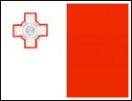

| Show 21 March 2012 |
Experience the Eurovision Song Contest with Radio International and Partners. Special Edition of Radio International: This week is a rather special edition of the weekly Eurovision Radio International with most of the team being away on holidays. JP is "home alone" in the studio playing the listeners' requests we have been adding to the Radio International Request List. Also this week features some of the interviews which were done during the Malta Eurovision Song Contest 2012 at the beginning of February 2012. Please note that during this special show we are not able to take any of your music requests this week. However, the show returns to the normal format next week taking all of your requests.
Please note that many interviews we air are also available as video interview which can be viewed on our Radio International YouTube Channel. Just take a look and enjoy also see the artists talk to us.
 Interview with Fabrizio Faniello (Malta 2001 & 2006): Fabrizo Faniello took part twice at the Eurovision Song Contest being in 2001 and 2006. In 2001 it was with "Another Summer Night" reaching Number 9 in Copenhagen and then in Athens reaching Number 24 for Malta with the song "I do". Fabrizio is a regular guest on Radio International and in 2012 he also took part in the Malta Eurovision Song Contest 2012 trying to represent Malta for a third time at the Eurovision Song Contest 2012 in Baku with the song "I will fight for you (Papa's Song)" which unfortunately was not selected by the Maltese public and the international jury during the Malta Eurovision Song Contest 2012. The song reached Number 6 in the Final. Listen to the interview the Team of Radio International did with Fabrizio on location at the Malta Fair and Convention Centre during the rehearsals. More details on the results of the Malta Eurovision Song Contest 2012 can be found here. Interview with Fabrizio Faniello (Malta 2001 & 2006): Fabrizo Faniello took part twice at the Eurovision Song Contest being in 2001 and 2006. In 2001 it was with "Another Summer Night" reaching Number 9 in Copenhagen and then in Athens reaching Number 24 for Malta with the song "I do". Fabrizio is a regular guest on Radio International and in 2012 he also took part in the Malta Eurovision Song Contest 2012 trying to represent Malta for a third time at the Eurovision Song Contest 2012 in Baku with the song "I will fight for you (Papa's Song)" which unfortunately was not selected by the Maltese public and the international jury during the Malta Eurovision Song Contest 2012. The song reached Number 6 in the Final. Listen to the interview the Team of Radio International did with Fabrizio on location at the Malta Fair and Convention Centre during the rehearsals. More details on the results of the Malta Eurovision Song Contest 2012 can be found here.
 Interview with Claudia Faniello (Malta Eurovision Song Contest 2012): Claudia is Fabrizio Faniello's sister and also a huge artist on the Malta Music Scene. In the Malta Eurovision Song Contest 2012 which is the show selecting the song that represents Malta at the Eurovision Song Contest 2012 she came second with the song "Pure". Claudia has been attempting to get the ticket for the Eurovision Song Contest a number of times since 2006 until 2012 whereas her most notable number is "Caravaggio" from 2008 where she had two songs in the Malta Song for Europe. She is a very diverse singer and presents every year a different type of genre to the Malta public. The Team of Radio International had the big pleasure of an indebt interview with the Maltese singer after her rehearsal which you can hear on this week's edition of Radio International. Find out more details about Claudia and her music here which also links you to her official website. Interview with Claudia Faniello (Malta Eurovision Song Contest 2012): Claudia is Fabrizio Faniello's sister and also a huge artist on the Malta Music Scene. In the Malta Eurovision Song Contest 2012 which is the show selecting the song that represents Malta at the Eurovision Song Contest 2012 she came second with the song "Pure". Claudia has been attempting to get the ticket for the Eurovision Song Contest a number of times since 2006 until 2012 whereas her most notable number is "Caravaggio" from 2008 where she had two songs in the Malta Song for Europe. She is a very diverse singer and presents every year a different type of genre to the Malta public. The Team of Radio International had the big pleasure of an indebt interview with the Maltese singer after her rehearsal which you can hear on this week's edition of Radio International. Find out more details about Claudia and her music here which also links you to her official website.
 Interview with Corazon (Malta Eurovision Song Contest 2012): Corazon is a new voice in the Malta Music Scene and has surprised many viewers of the Malta Eurovision Song Contest 2012 with her first entry called "Mystifying Eyes" which came 10th in the competition. The Team of Radio International also had the pleasure to be chatting with Corazon during her rehearsal about her music breakthrough and carerr in Malta plus more. Tune in to listen to the interview on this week's edition of Radio International. More details of Corazon are available here. Enjoy the interview! Interview with Corazon (Malta Eurovision Song Contest 2012): Corazon is a new voice in the Malta Music Scene and has surprised many viewers of the Malta Eurovision Song Contest 2012 with her first entry called "Mystifying Eyes" which came 10th in the competition. The Team of Radio International also had the pleasure to be chatting with Corazon during her rehearsal about her music breakthrough and carerr in Malta plus more. Tune in to listen to the interview on this week's edition of Radio International. More details of Corazon are available here. Enjoy the interview!
 Intervierw with Gianni (Malta Eurovision Song Contest 2012):"Petals on a rose" was the soft rock offereing of Gianni Zammit and his band trying to win the Malta Eurovision Song Contest 2012. He successfully qualified the song into the final in Malta reaching Number 4. Gianni is a great musician, owns his own radio station in Malta and is a fun guy. JP interviewed Gianni during the rehearsals for the Malta Eurovision Song Contest 2012. Listen to it during this week's special edition of Radio International Intervierw with Gianni (Malta Eurovision Song Contest 2012):"Petals on a rose" was the soft rock offereing of Gianni Zammit and his band trying to win the Malta Eurovision Song Contest 2012. He successfully qualified the song into the final in Malta reaching Number 4. Gianni is a great musician, owns his own radio station in Malta and is a fun guy. JP interviewed Gianni during the rehearsals for the Malta Eurovision Song Contest 2012. Listen to it during this week's special edition of Radio International
 Interview with Annelies Ellul (Malta Eurovision Song Contest 2012): Annalies Ellul performed the lively and upbeat "Woop it up" in the Malta Eurovision Song Contest 2012 and unfortunately did not qulify for the Final although it was tipped to be the favourite to even win the national final in Malta. Listen to the interview JP did with Annalies during her rehearsals. Interview with Annelies Ellul (Malta Eurovision Song Contest 2012): Annalies Ellul performed the lively and upbeat "Woop it up" in the Malta Eurovision Song Contest 2012 and unfortunately did not qulify for the Final although it was tipped to be the favourite to even win the national final in Malta. Listen to the interview JP did with Annalies during her rehearsals.
Eurovision Song Contest Calendar of Events: Check out a detailed listing of all events scheduled around Europe. If you hear of something we have not listed please drop us a line by clicking here
and let us know. After Eurovision is before Eurovision and to bridge
the Eurovision Gap many Eurovision Clubs will be holding their annual
convention.
Upcoming Events:
Sage, Gateshead, United Kingdom
with Lys Assia, Brotherhood of Man, Anne Marie David, Eldar &
Nigar, Bobbysocks, Daz Sampson, Scott Fitzgerald, Josh Dubowie, Nikki
French, Black Lace, Paul Herrington & Charlie McGettigan and still many to be added.
21 April 2012
Melkweg, Amsterdam, The Netherlands
Eurovision Music requests as well as other music requests are most welcome and can be done via our website's CONTACT US page. Let us know what you want to hear and where you are from. Due
to the large number of requests we received and cannot accommodate
this week these requests will be added to the play list for the future
shows.
|
|||||
 Eurovision News Website: escXtra.com: Luke Fisher is the Editor - in - Chief of the newly created Eurovision News website called escXtra.com. Check our more and EXTRA news on the Eurovision Song Contest by visiting the website
Eurovision News Website: escXtra.com: Luke Fisher is the Editor - in - Chief of the newly created Eurovision News website called escXtra.com. Check our more and EXTRA news on the Eurovision Song Contest by visiting the website | < Prev | Next > |
|---|